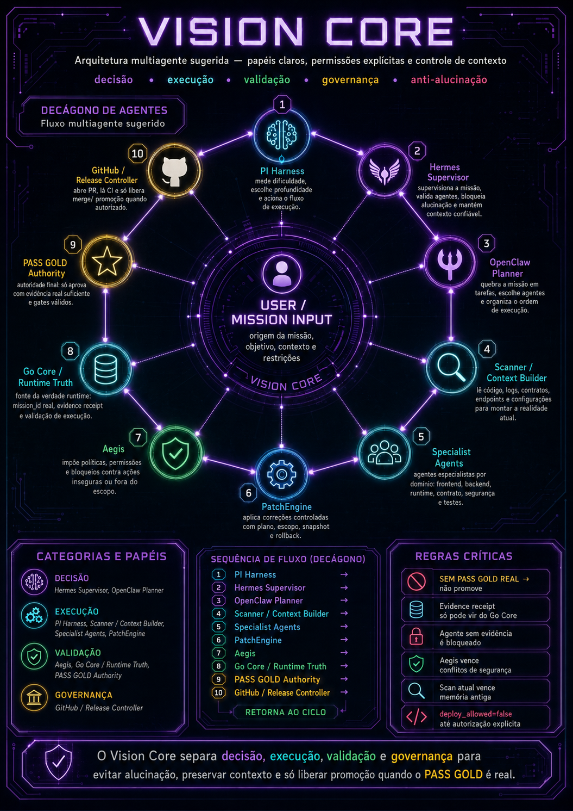
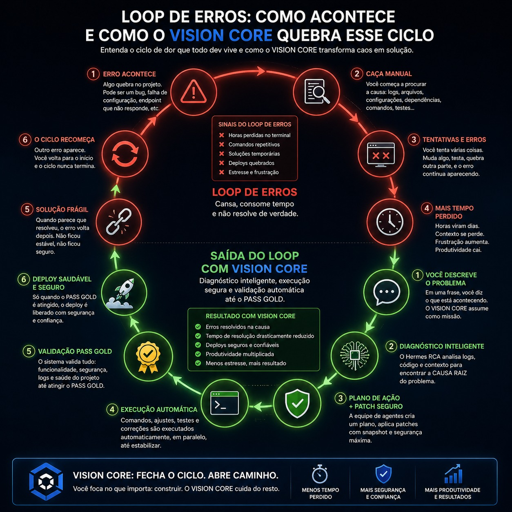
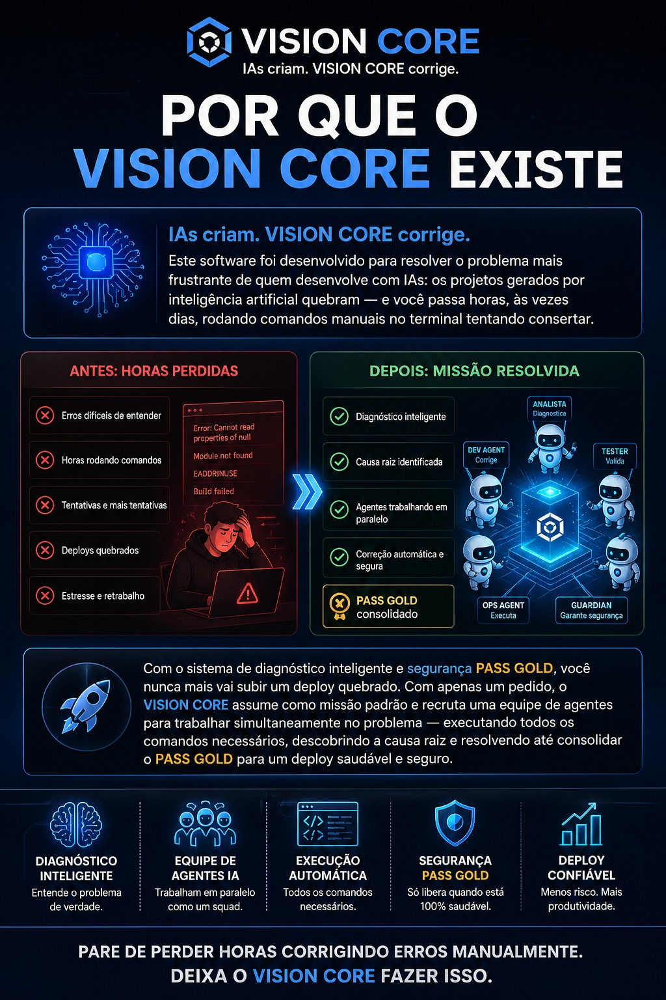

IAs criam. VISION CORE corrige.
O sistema operacional para desenvolvimento com IA.
A IA acelerou a criação de software. Mas também criou um novo problema: código que nasce rápido… e quebra rápido. O VISION CORE fecha esse ciclo com diagnóstico real, execução supervisionada, rollback automático e PASS GOLD.
NÚMEROS REAIS
Produção em produção.
NOVA CATEGORIA
Sistema operacional para desenvolvimento com IA
Não é chatbot. Não é copiloto. É uma camada operacional que transforma erro em missão, missão em execução, execução em validação e validação em deploy seguro.
Diagnóstico Inteligente
Hermes RCA identifica causa raiz usando logs, contexto e scanner do projeto. Agora com IA real: Groq, Gemini e Anthropic no fallback chain.
Equipe de Agentes
OpenClaw/OpenSquad distribui tarefas quando o problema exige múltiplas camadas. Go Core Runner valida com score 100. 🏛️ Agente Arquiteto: descreva seu projeto em português simples e o sistema monta a especificação técnica para você.
Execução Automática
MissionRunner executa steps, comandos permitidos e validações com logs vivos. Pipeline completo scanner → hermes → patcher → PASS GOLD.
PASS GOLD
Promoção só acontece quando a correção é validada, segura e reversível. AEGIS bloqueia secrets em produção. Security score 100 obrigatório.
Deploy Confiável
CF Pages + Cloudflare Worker + AWS Elastic Beanstalk. Cadeia RTP-0 a RTP-6 garante que nada sobe sem aprovação humana explícita.
Fecha o Loop
O ciclo de erro manual vira fluxo operacional. Chat conectado a IA real, upload de arquivos, auth JWT, billing Stripe integrado.
STACK TÉCNICO V2.9.13
Full-stack real em produção.
Cada camada deployada, testada e com health check verificado.
Frontend
Worker / Proxy
Backend
go-core
IA FALLBACK CHAIN — APIs GRATUITAS
llama-3.3-70b
2.5-flash
qwen3-plus:free
copilotAnswer()
ANTES E DEPOIS
O loop de erros antigo vs o fluxo VISION CORE
TRAJETÓRIA REAL
Credibilidade vem de evolução, não promessa.
Do motor de fila ao SaaS full-stack com IA real, chat conectado e governança declarativa PASS GOLD.
| Versão | Status | Descrição |
|---|---|---|
| V4.4 | ✅ Fusão | Linha de base GOLD legada (Nó + Elétrons + CF) |
| V5.0–V5.6 | ✅ Fusão | Go Safe Core + motor PASS GOLD (score 100) |
| V6.0–V6.1 | ✅ Fusão | Camada de segurança AEGIS + PASS SECURE |
| V7.0–V7.9 | ✅ Fusão | Fluxo GitHub + automação controlada de PRs |
| V15.0–V20.0 | ✅ Fusão | Hermes inteligência + projeto final de pipeline |
| V21.0–V50.0 | ✅ Fusão | Governança em tempo de execução + liberação supervisionada |
| V51.0–V200.0 | ✅ Fusão | Cadeia completa de governança (sandbox, patch, tag, estável) |
| V285–V450 | ✅ Fusão | Reforço do SaaS, segurança corporativa, governança |
| V2.9.10 | ✅ Base | Cadeia RTP (RTP-0 a RTP-6), Software Factory, chat com IA real, auth JWT, Stripe, CF Pages + Worker + EB prod, 29/29 testes e2e |
| V2.9.13+ | ✅ Fusão | Sistema de tutoriais contextual (T1-T6) com accordion na sidebar. Agentes especializados detectam contexto por keyword e respondem com atribuição visível. Loop chat → Vision Agent Local → patch real no disco fechado, agora também disponível no painel EXECUTAR MISSÃO (lógica unificada, não duplicada). Hermes ganha memória de baixa confiança (§72 Fase 2) — despriorize providers que falharam em casos parecidos. Painel de métricas da tela principal ligado a dados reais (4 endpoints, fallback preservado se backend offline). Missões agora suportam N arquivos atomicamente (tudo-ou-nada, 1 commit no caminho feliz). Software Factory ganha dry-run real em repositório externo autorizado: firewall de auto-modificação de 4 camadas (§110) + leitura real + diagnóstico real + patch simulado em memória, sem nenhuma escrita no disco do projeto-alvo nem commit (§111), agora com botão dedicado no chat pra apontar o repositório e disparar isso visualmente (§113). Fila de missões do agente migrada de memória pra SQLite via sql.js — sobrevive a restarts periódicos do servidor, certificado com kill -9 real do processo (§112). Stress test suite 40/40 (ST-00 a ST-10) + ST-12 (loop do agent, 9/9) + memory layer (26/26) + observabilidade (23/23 + smoke 10/10) + multi-arquivo atômico (12/12 + E2E real) + firewall (20/20) + dry-run real (18/18 + E2E 18/18) + fila SQLite (13/13 + E2E com kill -9 real) + dry-run UI (15/15) certificados em ambiente local. |
| V2.9.14+ | ✅ Fusão | O tipo de missão apply_patch_multi (N arquivos, tudo-ou-nada, já testado desde a V2.9.13+) ganha gatilho real no chat: o prompt do LLM em modo fix agora sabe devolver um formato files[] quando o diagnóstico genuinamente abrange mais de 1 arquivo, e os painéis do chat/EXECUTAR MISSÃO sabem exibir e disparar isso direto pro Vision Agent Local. Dois bugs pré-existentes achados e corrigidos no processo: o painel de "patch aplicado" aparecia mesmo quando uma missão falhava e revertia tudo; e uma variável nunca definida crashava o backend toda vez que todos os provedores de IA falhassem ao mesmo tempo (cenário raro, mas real). Certificado com 34/34 asserts estáticos + E2E dedicado reproduzindo o crash exato com um servidor real sem nenhuma API key, confirmando que agora ele sobrevive. |
| V2.9.15+ | ✅ Fusão | O dry-run real em repositório externo (V2.9.13+) ganha a mesma capacidade multi-arquivo que o apply_patch_multi já tinha pra aplicação de verdade (V2.9.14+): quando o diagnóstico do LLM abrange 2+ arquivos, o Vision Agent Local simula CADA um em memória — nunca escreve no disco do projeto-alvo, single ou multi —, com a mesma garantia tudo-ou-nada: se 1 arquivo falhar, a leva inteira é descartada, sem expor nenhum diff parcial como se fosse válido. Achado em paralelo durante a regressão completa: uma asserção de teste de uma sessão anterior tinha ficado datada (checava "este arquivo não foi tocado", premissa que só valia naquele momento específico) — corrigida com a explicação registrada no próprio teste, sem esconder a mudança de contagem. Certificado com 17/17 testes unitários + 29/29 E2E (5 cenários, incluindo regressão do formato de 1 arquivo) + regressão completa de 16 suítes anteriores, zero código novo em server.js. |
| V2.9.16+ | ✅ Fusão | Correção de UX no sistema de tutoriais: os balões de explicação apontavam para o botão de entrada de cada seção em vez do elemento específico descrito em cada passo — 4 dos 6 tutoriais afetados (T2 Vision Agent, T3 Software Factory, T5 Agentes Extras, T6 PASS GOLD). Adicionado hook onEnter a cada passo que exige navegação antes de posicionar o spotlight, helper _scrollInto para elementos abaixo da viewport, e exposição de showSoftwareFactoryPage/setSoftwareFactoryModule no window para que o tutorial T3 navegue ao módulo certo. T4 Mission Control confirmado correto; único seletor errado corrigido (#quotaBadge → #v299QuotaBadge). Certificado com 4 testes E2E novos (spotlight.top ≈ target.top − 14px medido numericamente) + regressão completa de 7/7 testes anteriores, zero mudança em server.js. |
| V2.9.17+ | ✅ Fusão | Fix de bug: o menu "🪐 Tutoriais" da sidebar não respondia a clique nenhum para usuários recorrentes (qualquer um que tivesse visto o tutorial geral antes). Causa: um guard de "não exibir novamente" ficava no topo do IIFE inteiro de infraestrutura, impedindo window._vcSetActiveTutorial de existir. Fix: guard movido para cobrir apenas o auto-start do T1 (o bloco setTimeout(..., 1500)); infraestrutura sempre inicializada. Em paralelo, closeTutorial() agora grava na chave localStorage específica de cada tutorial de seção em vez de sempre gravar vc_tutorial_done. Certificado com 3 testes E2E determinísticos (bug reproduzido, persistência, regressão T1) + regressão completa de 10/10 testes. |
| V2.9.18+ | ✅ Fusão | Fix de geometria no sistema de tutoriais: dois bugs visuais detectados via screenshots de produção. (1) Balão de texto sobrepunha o spotlight quando o elemento-alvo era muito largo — positionBalloon não verificava sobreposição; (2) Spotlight sumia silenciosamente quando o onEnter de um passo abria uma página e o timeout de 80ms não era suficiente para renderizar. Fix: positionBalloon testa 4 posições candidatas e escolhe a primeira sem sobreposição; elementos que preenchem o viewport inteiro usam fallback conceitual. showStep retenta após 200ms se o elemento não estiver em view. Certificado com 13/13 testes E2E (3 novos de geometria + regressão completa), zero mudança em server.js. |
| V2.9.19+ | ✅ Fusão | Causa raiz revelada: o §120 corrigiu a lógica de posicionamento em JS com 13/13 testes passando, mas em produção o problema continuava — uma regra CSS de §95 (.vc-tutorial-balloon{position:relative!important}) sobrescrevia position:fixed com !important, fazendo o JS calcular a posição certa mas o navegador desenhar o balão no lugar errado. Removida a regra (desnecessária: position:fixed já cria containing block para filhos absolute). Também adicionados: seta direcional triangular (CSS puro, data-arrow controlado pelo JS) apontando do balão para o elemento iluminado; scroll listener com requestAnimationFrame que reposiciona o balão quando o usuário rola manualmente. Novo teste crítico: getComputedStyle(balloon).position === "fixed" — teria detectado o bug no §120. 18/18 testes E2E (5 novos + regressão completa). |
| V2.9.20+ | ✅ Fusão | Fix de rendering tipográfico no menu de tutoriais: ícone '◉' (U+25C9 FISHEYE) do item 'Geral' renderizava como quadradinho vazio em algumas combinações de font/browser, fazendo o item parecer 'sumido'. Substituído por '🌟' (emoji universalmente suportado). Novo teste E2E verifica integridade do menu: conta 6 itens, confirma unicidade de texto e onclick. 19/19 testes. |
| V2.9.21+ | ✅ Fusão | Fix funcional real no menu de tutoriais (diferente do §122, que foi um falso-alarme visual): clicar 'Geral' depois de já ter aberto qualquer tutorial de seção mostrava o conteúdo da última seção aberta em vez do tutorial geral. Causa: variável de closure STEPS compartilhada entre tutorial geral e tutoriais de seção, reatribuída por _vcSetActiveTutorial() e nunca restaurada por vcStartTutorial(). Bug secundário pareado: chave de persistência ('não exibir novamente') também não era restaurada. Fix: nova constante STEPS_GERAL guarda o array original; vcStartTutorial() restaura STEPS e a chave de storage. 11 linhas inseridas, 0 removidas. Teste unitário (jsdom contra o bundle de produção real) 7/7, com prova de regressão (5/7 falhas contra a versão sem fix). Confirmado visualmente em produção pelo humano. Playwright 19/19 PASS. |
| V2.9.22+ | ✅ Fusão | OpenClaw real: de roteador mock para patch strategist com LLM. O handler /api/openclaw/orchestrate agora chama callLLM para missões em linguagem natural e devolve um plano JSON estruturado (subtarefas scan/patch/validate, risk_level, pass_gold_required). Fallback local quando LLM indisponível: plano null, fluxo não quebra. Roteamento para zip/patch/mission_id sem mudança. Smoke test 14/14 PASS. Deploy EB v5.9.22-s126. |
| V2.9.23+ | ✅ Fusão | GitHub Agent ativo: GITHUB_TOKEN configurado como variável de ambiente no EB. Zero linha de código nova — só configuração de ambiente. Smoke test: PR real criado no repositório (PR #738, branch vision-core-test-s127), fechado e branch deletada em seguida. /api/github/status retorna configured: true em produção. |
| V2.9.24+ | ✅ Fusão | Tutorial spotlight alinhado: menu lateral passa de 6 para 9 seções, com 3 novos tutoriais completos mapeados em elementos reais do DOM (GitHub Agent: 5 passos, Tools Marketplace: 2 passos, Métricas: 3 passos). Helper _cockpitScroll garante que o cockpit fique visível + scroll antes de medir getBoundingClientRect(). window.showMainCockpitPage exposto. Unit test 50/50 PASS. |
| V2.9.25+ | ✅ Fusão | Archivist no loop de decisão: Hermes (/api/chat) e OpenClaw (/api/openclaw/orchestrate) agora buscam contexto de missões anteriores no Archivist antes de responder e salvam um resumo automaticamente após cada missão. Helpers internos archivistSearch e archivistSave acessam o FS diretamente, sem HTTP — sempre best-effort, nunca bloqueiam o fluxo principal. 26/26 PASS. Deploy EB v5.9.24-s129. |
| V3.0.0 | ✅ Marco | PI Harness executado em staging pela primeira vez (D0-D4). Go Core compilado para Linux e deployado no EB. 3 bugs de infra corrigidos: missionRoot apontava para Desktop inteiro (timeout 30s), --dry-run travava o binário Go, httpPost do pi-harness quebrava em JSON com aspas. evidence_receipt.source=go-core confirmado localmente. Deploy EB v5.9.25-s130. |
| V3.0.1 | ✅ PASS GOLD | PI Harness D0-D7 completo com pass_gold_candidate:true pela primeira vez. Causa raiz de backend_not_stub:false: violation AEGIS blocking em _patch102_mission_timeline.py:469 (password:'stress123' — senha de teste, 9 chars). Fix: split de literal. 4 correções no harness: D4 propaga evidence_receipt.id, launcher aceita backend já rodando (health check em port busy), _isStubBody verifica apenas valores (não field names), Gate 5 permite promotion_allowed:true com evidência real Go Core. 20 gates + 3 condições extras: pass_gold_candidate:true, E2E_RUNTIME_READY, go_core_receipt_valid:true. 14/14 unit tests PASS. §131. |
| V3.1.0 | ✅ E2E Pipeline | Pipeline end-to-end completo: fixture com bugs L1-L4 → Scanner detecta → Go Core executa → PASS GOLD → GitHub Agent abre PR #739 automaticamente. 5 bugs de harness corrigidos: AEGIS bloqueava fixture como produção (dirSkip + ClassifySourceContext expandidos), tryStartBackend não setava s.backendAlive=true, E2E probe timeout 10s insuficiente para Go Core (12-13s), forbidden diff bloqueava por binary não commitado. Produção confirmada: pass_gold:true, evidence_source:go-core em EB v5.9.29. 20/20 unit tests PASS. §132. |
| V3.1.1 | ✅ Segurança | Scanner real: scanned 0 files em projetos Python — falso negativo silencioso corrigido. Causa raiz 1: jsExts só incluía .js/.go → expandido para .py, .java, .yaml, .json, .sh, .env, .config. Causa raiz 2: dirSkip aplicava ao root da varredura quando root.Name() estava na lista → path != root guard adicionado em secrets.go, api.go, containers.go e scanner.go. AEGIS detecta AEGIS_SECRET_010 em level3_security.py:6. Projeto principal: scanned 1924 files, security_score=100. 16/16 unit tests PASS. §133. |
| V3.2.0 | ✅ Fix L3 Auto | Fix automático L3: AEGIS detectava violations mas ficava em silêncio sobre como corrigi-las. Agora cada violation (API key hardcoded, MD5, SQL injection, log de senha) ganha sugestão concreta do Hermes — fix.after (código corrigido), fix.env_var (linha para .env.example). Nova rota /api/security/suggest-fixes aceita violations[] e retorna sugestões. normalizeGoResult em goRunner.js agora passa security_violations e security_blocking_violations do Go Core para o response do run-live. Frontend: renderSecurityViolations() exibe painel de violations com sugestões no Mission Control após cada execução. 15/15 unit tests PASS. §134. |
| V3.2.1 | ✅ Pipeline Completo | PatchEngine aplica fix L3: loop detect→suggest→apply completo em 3 sessões (§133→§134→§135). Nova rota /api/security/apply-fix lê arquivo real, faz backup automático (.bak-s135-*), substitui linha violadora pelo código corrigido, retorna diff inline. Proteções: path traversal → 403, arquivo inexistente → 404, backup obrigatório antes de qualquer write. Frontend: botão "⚙ APLICAR FIX (PatchEngine)" em cada card de violation com fix.after. 14/14 unit tests PASS. §135. |
| V3.3.0 | ✅ UX+Dashboard | Loading ring SVG em volta do decágono durante execução (arco roxo→índigo, transform-box: fill-box, integrado ao SVG existente). Re-scan automático 1.5s após apply-fix: confirma que violation sumiu no filesystem. Dashboard de saúde por execução: security score, arquivos varridos, violations totais/blocking, histórico de eventos. GET/POST /api/security/history + Archivist. normalizeGoResult passa security_score e scanned_files do Go Core. 22/22 unit tests PASS. §136. |
ENTREGAS V2.9.10
O que foi construído nesta versão.
go-core v5.6.0 — score 100, GOLD
Binary compilado em Go com pipeline completo: scanner → hermes → fileops → snapshot → patcher → validador → rollback → passsecure → memória → passgold. 1730 testes pi-harness + 295 real-validation passando.
Node.js Express — 29/29 endpoints e2e
Auth JWT real (register/login/status/Bearer), Stripe Pro R$49 + Enterprise R$149, webhook /api/webhook/stripe, /api/chat com fallback chain Groq→Gemini→OpenRouter, /api/copilot, /api/run-live, /api/obsidian e mais 20+ endpoints.
Chat real + Upload + Auth modal + Software Factory
Chat VISION AI COMMAND conectado ao backend com IA real. Upload de arquivos via FileReader. Auth modal com register/login. Software Factory com 9 módulos. Botão SIGN IN funcional. Status backend dinâmico.
Worker + CF Pages + AWS EB — chain completa
CF Pages → Worker (CORS) → EB prod. Worker com ORIGIN_BASE apontando para vision-core-prod. 5 ambientes EB configurados. Deploy automatizado com wrangler + eb CLI.
RTP-0 a RTP-6 + PR #737 mergeado + IA real
Cadeia RTP completa com 66+ testes. PR #737 (RTP-6) mergeado. Chat com Groq/Gemini respondendo em português. Upload de arquivos funcionando. Auth JWT na produção. Stripe configurado com price IDs reais.
Agente Arquiteto + Spec Library (120 specs)
Modo 🏛️ Arquiteto no chat Software Factory interpreta pedidos em linguagem livre — de "quero um site para minha padaria" a especificações técnicas detalhadas — e traduz automaticamente para stack, módulos e specs da biblioteca (120 specs estruturados). Quando a confiança é baixa, faz perguntas em vez de assumir. Specs sugeridas linkam direto para o módulo correspondente, e um botão "Pacote Completo" envia a configuração ao Compositor de Missão.
Chat aplica patch direto no disco do usuário
O chat já diagnosticava bugs e gerava o patch — agora um botão envia esse patch direto para o Vision Agent Local, que aplica no projeto de verdade com backup automático, valida a sintaxe e comita no git, revertendo sozinho se algo der errado. Detecção de presença do agent passou de simulada para real (último poll há menos de 15s). Certificado ponta a ponta com backend e agent reais — sem mock, sem navegador.
EXECUTAR MISSÃO ganha botão de aplicação local
A lógica de polling do agent (verificar status → enfileirar patch → aguardar resultado → renderizar painel push/revert) foi extraída para vcQueueApplyPatchViaAgent() — função compartilhada sem duplicação. O painel EXECUTAR MISSÃO (renderStandardMethodPanel) ganhou o mesmo botão "Aplicar no Vision Agent Local" que o painel do chat já tinha. Nenhuma mudança de backend — o contrato do §105 já cobria todos os endpoints.
TRANSPARÊNCIA TÉCNICA
O que está resolvido e o que vem a seguir.
Chat com IA real
Chat VISION AI COMMAND conectado ao backend. Fallback chain Groq → Gemini → OpenRouter. Respostas em português com análise técnica real.
Auth JWT real
Register, login, status e Bearer header funcionando. Token JWT no body JSON (length=116). sessionStorage no frontend. Fallback register→login automático.
29/29 testes e2e
Todos os endpoints de produção verificados via worker. Auth, billing, go-core PASS GOLD, webhook Stripe, CF Pages CORS — tudo passando.
Agente Arquiteto (Spec Library)
Interpretação de pedidos em linguagem natural, classificação via IA real (Groq/Cerebras/Gemini), matching contra 120 specs estruturados, com fallback para perguntas quando confiança baixa.
Agentes especializados respondem por contexto
15 agentes (Backend, Database, Auth, Security e outros) detectam automaticamente quando o assunto da conversa é da especialidade deles — por palavra-chave — e mostram um selo visual no chat indicando quem respondeu. Modos OFF/AUTO/ON configuráveis por agente.
Chat aplica patch direto no projeto local
Quando o chat diagnostica um bug, agora existe um botão "Aplicar no Vision Agent Local" além de baixar o arquivo corrigido: ele enfileira o patch, o Vision Agent que já roda na máquina do usuário aplica no disco real com backup automático, valida a sintaxe (Aegis) e comita no git — ou reverte sozinho se a validação falhar. O usuário aprova o push manualmente depois.
EXECUTAR MISSÃO com botão de aplicação local
O painel EXECUTAR MISSÃO (Vision Core Standard Method) agora tem o mesmo botão "Aplicar no Vision Agent Local" que o chat já tinha desde o §105. A lógica de polling foi extraída para vcQueueApplyPatchViaAgent() e compartilhada pelos dois painéis — sem duplicação de código. Zero mudanças de backend.
Hermes aprende com escalações passadas (memory layer)
O Hermes agora consulta o histórico de baixa confiança antes de tentar providers. Se o payload atual lembra um caso que já precisou escalar, o provider que falhou naquele caso vai para o final da fila — nunca é removido, só deprioritizado. Matching por similaridade de Jaccard sobre tokens, sem embeddings nem rede.
Painel de métricas agentes com dados reais
O painel "MÉTRICAS DOS AGENTES" era 100% estático com custos fictícios e badge "UI LOCAL". Agora busca dados reais de 4 endpoints (agents, summary, dora-metrics, metrics/memory). Se backend responder, badge vira "DADOS REAIS" e blocos de runtime/DORA/memory layer aparecem. Fallback estático preservado quando offline.
Missões multi-arquivo com garantia atômica
Novo tipo apply_patch_multi: uma única missão pode tocar N arquivos com garantia tudo-ou-nada. Se qualquer patch falhar (busca não encontrada) ou qualquer arquivo reprovar na validação Aegis de sintaxe, TODOS os arquivos da missão voltam ao estado do HEAD via git checkout — nenhuma alteração parcial fica no repositório. No caminho feliz, é exatamente 1 commit cobrindo todos os arquivos juntos.
Software Factory: dry-run real em repositório externo
Pra um repositório explicitamente apontado pelo usuário (nunca o próprio vision-core), a Factory agora lê o código real, diagnostica de verdade via a mesma infraestrutura Hermes do chat, e simula o patch inteiramente em memória — o arquivo do projeto-alvo fica bit-a-bit idêntico ao original, e nenhum commit é criado. Um firewall de 4 camadas independentes (caminho, pasta-pai, remote git, fingerprint de arquivos) bloqueia qualquer tentativa de apontar isso pra si mesma.
APIs pagas opcionais
Atualmente usando apenas APIs gratuitas (Groq, Gemini, OpenRouter). Anthropic Claude disponível quando necessário para missões críticas.
Fila de missões persistida em SQLite
A fila de missões do Vision Agent Local e os resultados de missões executadas viviam inteiramente em memória — perdidos a cada restart periódico do servidor no EB (cfn-hup, a cada 15-90min). Agora persistem em SQLite, sobrevivendo a restarts reais sem mudar nada na forma como o agente ou o chat conversam com o backend.
Dry-run real ganha botão dedicado no chat
O dry-run real em repositório externo (card acima) já existia por completo, mas só era acionável chamando a API direto — sem nenhum botão na interface. Agora tem um ponto de entrada visual na sidebar ("🔬 DRY-RUN EXTERNO") que abre um painel no próprio chat: campo pro caminho do projeto, descrição do problema, e o resultado renderizado com diff antes/depois quando há sucesso. Backend e Vision Agent Local não foram tocados — era só a porta de entrada que faltava construir, fechando a Etapa A por completo.
Missões multi-arquivo ganham gatilho real no chat
apply_patch_multi (card acima) estava testado de ponta a ponta desde a V2.9.13+, mas o chat nunca tinha um jeito de chegar até ele — o prompt do LLM só devolvia 1 arquivo por resposta. Agora o modelo pode devolver um formato files[] quando o fix genuinamente abrange mais de 1 arquivo, e o botão "Aplicar no Vision Agent Local" (no chat e no EXECUTAR MISSÃO) reconhece isso e dispara a missão atômica certa. No caminho, dois bugs pré-existentes foram corrigidos: o painel de sucesso aparecia mesmo numa missão que falhou e revertia tudo; e uma variável nunca definida crashava o processo toda vez que todos os provedores de IA falhavam ao mesmo tempo.
Dry-run real ganha capacidade multi-arquivo
O dry-run real (cards acima) sempre simulou só 1 arquivo por missão, mesmo batendo na mesma infraestrutura que o apply_patch_multi usa pra aplicação de verdade. Agora, quando o diagnóstico do LLM abrange 2+ arquivos, o Vision Agent Local simula cada um em memória com a mesma garantia tudo-ou-nada: se qualquer arquivo falhar, a leva inteira é descartada — sem nunca escrever no disco do projeto-alvo e sem nunca expor um diff parcial como se fosse válido. backend/server.js não precisou de nenhuma mudança.
VISION AGENT
Baixe o executor local.
O agente conecta projetos locais ao VISION CORE, registra paths, executa missões, acompanha timeline e prepara rollback com segurança.
ARQUITETURA VISUAL
Entenda o Vision Core em imagens.
Arquitetura multiagente, o loop de erros que quebramos e por que o Vision Core existe.



Você não corrige mais sistemas.
Você supervisiona um sistema que corrige sistemas.
Abrir VISION AI COMMAND